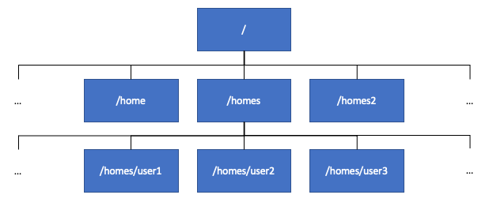

In this section you will learn how to explore the Linux file system, and how to create, move, delete and edit files and directories.
/~
/home, however
on the bifx servers user home directories are also found in
/homes and /homes2
The Linux file system, where all files in a Linux system are stored,
is structured as a tree with a single root directory, known as
/, as shown in the above image. The root directory has a
number of subdirectories. The most important for us on the bifx servers
are the /homes and /homes2 folders, as these
are where users’ home directories are stored. Each user’s files are
generally stored in their home directory, and by default users on the
bifx servers are not permitted to create files outside their own home
directory. You can find out the path to your home directory by running
the command echo $HOME.
File paths in Linux can be either absolute paths, or relative paths.
Each file in the Linux file system tree is uniquely identified by its
absolute path. The absolute path comprises a list of the parent
directories of the file, starting from the root directory, separated by
the / character, followed by the name of the file. The name
of a file, and the path to its parent directory, can be extracted from
its path using the basename and dirname
commands:
[USERNAME]@bifx-core2:~$ basename /library/training/bioinformatics_on_the_command_line
bioinformatics_on_the_command_line
[USERNAME]@bifx-core2:~$ dirname /library/training/bioinformatics_on_the_command_line
/library/training
[USERNAME]@bifx-core2:~$ In Linux file names can contain almost any character other than
/. However, many characters, including spaces and special
characters such as ’ and “, can make files difficult to work with, so,
in general, it’s better to stick with letters, numbers, underscores,
dashes, and dots when naming files. If you do have to work with a file
that contains special characters, you can either put the file path in
quotes or use backslashes to escape the special characters:
[USERNAME]@bifx-core2:~$ basename /library/training/bioinformatics_on_the_command_line/file name with spaces
basename: extra operand ‘with’
Try 'basename --help' for more information.
[USERNAME]@bifx-core2:~$ basename '/library/training/bioinformatics_on_the_command_line/file name with spaces'
file name with spaces
[USERNAME]@bifx-core2:~$ basename /library/training/bioinformatics_on_the_command_line/file\ name\ with\ spaces
file name with spaces
[USERNAME]@bifx-core2:~$Note: Tab completion works with filenames as well as command names.
The pwd command shows the absolute path of the current
working directory:
[USERNAME]@bifx-core2:~$ pwd
/homes/[USERNAME]
[USERNAME]@bifx-core2:~$While absolute paths provide an unambiguous way of referring to files, they can be cumbersome. For this reason, Linux makes it possible to define paths relative to the current working directory or the user’s home directory:
~ refers to the user’s home directory. refers to the current working directory.. refers to the parent directory of the current
working directory
../.. refers to the parent directory of the parent
directory of the current working directory, ../../.. refers
to the parent directory of that directory, and so onIf you just use the name of a file, Linux assumes that you are referring to a file in the current working directory.
The realpath command can be used to show the absolute
path corresponding to a relative path:
[USERNAME]@bifx-core2:~$ realpath ~
/homes/[USERNAME]
[USERNAME]@bifx-core2:~$ realpath .
/homes/[USERNAME]
[USERNAME]@bifx-core2:~$ realpath ..
/homes
[USERNAME]@bifx-core2:~$ Linux also makes it possible to include wildcards in file paths, making it possible to refer to a group of file paths at once. Paths that include wildcards are called glob patterns. Useful wildcards include:
* which matches any sequence of characters? which matches any single character[] which matches a single character within the square
brackets
When bash sees a glob pattern, it expands it into a list of file
paths that match the pattern (separated by spaces). A convenient way to
experiment with glob patterns (and to make sure they match the files you
want them to) is to use the echo command, which prints its
arguments to the command line:
[USERNAME]@bifx-core2:~$ echo /homes/genomes/mouse/*
/homes/genomes/mouse/GRCm38 /homes/genomes/mouse/mm10 /homes/genomes/mouse/mm9 /homes/genomes/mouse/UCSC
[USERNAME]@bifx-core2:~$ echo /homes/genomes/mouse/mm?
/homes/genomes/mouse/mm9
[USERNAME]@bifx-core2:~$ echo /homes/genomes/mouse/mm*
/homes/genomes/mouse/mm10 /homes/genomes/mouse/mm9
[USERNAME]@bifx-core2:~$Note: If you write an argument to a command that contains glob wildcard characters, but is not a glob pattern, always remember to put it in quotes to prevent it from being expanded by the shell. It’s also worth remembering that glob patterns do not match files that start with a dot. These are hidden files and are often used as configuration files that users do not normally need to see.
The Linux file system contains a three main types of file:
As well as its name and path, each file has a number of attributes
associated with it, such as its size, when it was last modified, and the
permissions associated with it. You can check the attributes associated
with a file using the stat command:
[USERNAME]@bifx-core2:~$ stat /library/training/bioinformatics_on_the_command_line/bioinformatics_on_the_command_line_files.tar.gz
File: /library/training/bioinformatics_on_the_command_line/bioinformatics_on_the_command_line_files.tar.gz
Size: 4059820 Blocks: 7975 IO Block: 8192 regular file
Device: 37h/55d Inode: 13189 Links: 1
Access: (0644/-rw-r--r--) Uid: ( 0/ root) Gid: ( 0/ root)
Access: 2020-11-12 12:56:58.543765691 +0000
Modify: 2020-11-12 12:53:47.358367501 +0000
Change: 2020-11-12 12:56:31.032140047 +0000
Birth: -
[USERNAME]@bifx-core2:~$The output of the stat command shows us:
r), permission to write to the file
(w), and permission to execute the file
(x)Note: When you run the stat command on a
directory it shows the size of the directory itself, not the size of the
directory with all of its contents (which is normally what you want). To
find the size of a directory and its contents, you can use the
du -sh command:
[USERNAME]@bifx-core2:~$ stat /library/training/bioinformatics_on_the_command_line
File: /library/training/bioinformatics_on_the_command_line
Size: 4 Blocks: 41 IO Block: 4096 directory
Device: 37h/55d Inode: 13190 Links: 2
Access: (0755/drwxr-xr-x) Uid: ( 0/ root) Gid: ( 0/ root)
Access: 2020-11-13 10:21:45.604446040 +0000
Modify: 2020-11-12 22:13:44.568434982 +0000
Change: 2020-11-12 22:13:44.568434982 +0000
Birth: -
[USERNAME]@bifx-core2:~$ du -sh /library/training/bioinformatics_on_the_command_line
4.0M /library/training/bioinformatics_on_the_command_line
[USERNAME]@bifx-core2:~$ One option would be /homes/genomes/mouse/[GU]*
One option would be /homes/genomes/mouse/*[0-9]
Everyone on the server can read the file. The user that owns the file can read and write to it. Nobody is permitted to execute this file.
cd changes the current working directorypushd also changes the current working directory, but
keeps a history of where you’ve been
popd to go back, and dirs to look at
the historyls command lists the files in the current working
directorytree command provides a readable summary of the
files in the current directory and its subdirectoriesfind command recursively searches for files in the
current file systemThe following example demonstrates how we can navigate within the file system, and view and find files:
[USERNAME]@bifx-core2:~$ cd /library/training/bioinformatics_on_the_command_line
[USERNAME]@bifx-core2:/library/training/bioinformatics_on_the_command_line$ ls
analysis_improved.sh analysis_raw.sh bioinformatics_on_the_command_line_files.tar.gz 'file name with spaces'
[USERNAME]@bifx-core2:/library/training/bioinformatics_on_the_command_line$ ls -lah
drwxr-xr-x 2 root root 6 Nov 16 12:53 .
drwxr-xr-x 3 root root 3 Nov 12 12:56 ..
-rwxr-xr-x 1 root root 3.2K Nov 16 12:54 analysis_improved.sh
-rw-r--r-- 1 root root 1.3K Nov 16 12:53 analysis_raw.sh
-rw-r--r-- 1 root root 3.9M Nov 12 12:53 bioinformatics_on_the_command_line_files.tar.gz
-rw-r--r-- 1 root root 0 Nov 12 21:58 'file name with spaces'
[USERNAME]@bifx-core2:/library/training/bioinformatics_on_the_command_line$ ls -lah *.gz
-rw-r--r-- 1 root root 3.9M Nov 12 12:53 bioinformatics_on_the_command_line_files.tar.gz
[USERNAME]@bifx-core2:/library/training/bioinformatics_on_the_command_line$ pushd /homes/genomes/
/homes/genomes /library/training/bioinformatics_on_the_command_line
[USERNAME]@bifx-core2:/homes/genomes$ pushd /library/training/
/library/training /homes/genomes /library/training/bioinformatics_on_the_command_line
[USERNAME]@bifx-core2:/library/training$ dirs
/library/training /homes/genomes /library/training/bioinformatics_on_the_command_line
[USERNAME]@bifx-core2:/library/training$ tree
.
└── bioinformatics_on_the_command_line
├── analysis_improved.sh
├── analysis_raw.sh
├── bioinformatics_on_the_command_line_files.tar.gz
└── file name with spaces
1 directory, 4 files
[USERNAME]@bifx-core2:/library/training$ popd
/homes/genomes /library/training/bioinformatics_on_the_command_line
[USERNAME]@bifx-core2:/homes/genomes$ find ./mouse/mm10/ -type f -name '*.bed'
./mouse/mm10/mm10_repeat_masker.bed
./mouse/mm10/mm10-liftover-blacklist.bed
./mouse/mm10/annotation/GSE17051_cLAD_regions.mm10.bed
./mouse/mm10/annotation/Mus_musculus.GRCm38.79.edited.bed
./mouse/mm10/annotation/mm10_cgi.liftover.bed
./mouse/mm10/annotation/mm10-liftover-blacklist.bed
./mouse/mm10/annotation/GSE17051_ciLAD_regions.mm10.bed
./mouse/mm10/annotation/Ensembl.transcripts.bed
./mouse/mm10/annotation/mm10.blacklist.bed
./mouse/mm10/annotation/mm10-liftover-blacklist.OLD.bed
./mouse/mm10/mm10repeats.bed
[USERNAME]@bifx-core2:/homes/genomes$ popd
/library/training/bioinformatics_on_the_command_line
[USERNAME]@bifx-core2:/library/training/bioinformatics_on_the_command_line$ cd
[USERNAME]@bifx-core2:~$
Note: In this example we have used the command
ls -lah. This is an example of a shorthand that you can use
in the bash shell when specifying multiple flags. ls -lah
is equivalent to ls -l -a -h.
Run
find /homes/genomes/mouse/ -type f -name 'genome.fa'
Run ls /homes/genomes/ to list the organisms in
‘/homes/genomes’. Run
find /homes/genomes/ -maxdepth 2 -type d to list the
subdirectories of the directories representing the organisms, which
represent genome releases. Run
find /homes/genomes/mouse -type f -size +6G to list the
files over 6GB in size.
touch, by a text editor, or
by redirecting the output of a programln -smkdir, and empty
directories can be removed using rmdirrm command can be used to delete files, links, and
directories along with their contents (using the -r flag)
rm should be used
with care. The -i flag can be used to prompt for
confirmation before deleting filesThe following example demonstrates how we can create and remove files, directories and links:
[USERNAME]@bifx-core2:~$ mkdir course
[USERNAME]@bifx-core2:~$ cd course
[USERNAME]@bifx-core2:~/course$ mkdir -p dir1 dir2 dir3/dir4
[USERNAME]@bifx-core2:~/course$ tree
.
├── dir1
├── dir2
└── dir3
└── dir4
4 directories, 0 files
[USERNAME]@bifx-core2:~/course$ touch file1
[USERNAME]@bifx-core2:~/course$ tree
.
├── dir1
├── dir2
├── dir3
│ └── dir4
└── file1
4 directories, 1 file
[USERNAME]@bifx-core2:~/course$ cd dir1
[USERNAME]@bifx-core2:~/course$ ln -s ../file1
[USERNAME]@bifx-core2:~/course$ cd ..
[USERNAME]@bifx-core2:~/course$ tree
.
├── dir1
│ └── file1 -> ../file1
├── dir2
├── dir3
│ └── dir4
└── file1
4 directories, 2 files
[USERNAME]@bifx-core2:~/course$ rmdir *
rmdir: failed to remove 'dir1': Directory not empty
rmdir: failed to remove 'dir3': Directory not empty
rmdir: failed to remove 'file1': Not a directory
[USERNAME]@bifx-core2:~/course$ tree
.
├── dir1
│ └── file1 -> ../file1
├── dir3
│ └── dir4
└── file1
3 directories, 2 files
[USERNAME]@bifx-core2:~/course$ rm -ri *
rm: descend into directory 'dir1'? y
rm: remove symbolic link 'dir1/file1'? y
rm: remove directory 'dir1'? n
rm: descend into directory 'dir3'? y
rm: remove directory 'dir3/dir4'? y
rm: remove directory 'dir3'? y
rm: remove regular empty file 'file1'? n
[USERNAME]@bifx-core2:~/course$ tree
.
├── dir1
└── file1
1 directory, 1 file
[USERNAME]@bifx-core2:~/course$ rmdir dir1
[USERNAME]@bifx-core2:~/course$ rm -i file1
rm: remove regular empty file 'file1'? y
[USERNAME]@bifx-core2:~/course$ tree
.
0 directories, 0 files
[USERNAME]@bifx-core2:~/course$The example demonstrates a number of commands:
touch to create an empty file
mkdir to create empty directories
ln -s to create a symbolic link to a file or
directoryrmdir to delete empty directories, without deleting
files or non-empty directoriesrm command
Use ln -s -T [path to target file] [new name]
cp
-r
flagtar commandrsync, which only
copies updated filesmv
prenamechmod and touch
touch updates the timestamp of an existing filechmod changes the permissions on a fileThe following example demonstrates how we can copy files and directories, extract archive files, synchronise directories, and update file permissions:
[USERNAME]@bifx-core2:~/course$ cp /library/training/bioinformatics_on_the_command_line/bioinformatics_on_the_command_line_files.tar.gz ./
[USERNAME]@bifx-core2:~/course$ tar xzvf bioinformatics_on_the_command_line_files.tar.gz
bioinformatics_on_the_command_line_files/
bioinformatics_on_the_command_line_files/raw_yeast_rnaseq_data.fastq
bioinformatics_on_the_command_line_files/yeast_genome.fasta
bioinformatics_on_the_command_line_files/README
bioinformatics_on_the_command_line_files/yeast_genes.bed
[USERNAME]@bifx-core2:~/course$ tree
.
├── bioinformatics_on_the_command_line_files
│ ├── raw_yeast_rnaseq_data.fastq
│ ├── README
│ ├── yeast_genes.bed
│ └── yeast_genome.fasta
└── bioinformatics_on_the_command_line_files.tar.gz
1 directory, 5 files
[USERNAME]@bifx-core2:~/course$ cp -a -r bioinformatics_on_the_command_line_files bioinformatics_on_the_command_line_files-copy
[USERNAME]@bifx-core2:~/course$ tree
.
├── bioinformatics_on_the_command_line_files
│ ├── raw_yeast_rnaseq_data.fastq
│ ├── README
│ ├── yeast_genes.bed
│ └── yeast_genome.fasta
├── bioinformatics_on_the_command_line_files-copy
│ ├── raw_yeast_rnaseq_data.fastq
│ ├── README.txt
│ ├── yeast_genes.bed
│ └── yeast_genome.fasta
└── bioinformatics_on_the_command_line_files.tar.gz
2 directories, 9 files
[USERNAME]@bifx-core2:~/course$ mv bioinformatics_on_the_command_line_files-copy/README ./README.txt
[USERNAME]@bifx-core2:~/course$ tree
.
├── bioinformatics_on_the_command_line_files
│ ├── raw_yeast_rnaseq_data.fastq
│ ├── README
│ ├── yeast_genes.bed
│ └── yeast_genome.fasta
├── bioinformatics_on_the_command_line_files-copy
│ ├── raw_yeast_rnaseq_data.fastq
│ ├── yeast_genes.bed
│ └── yeast_genome.fasta
├── bioinformatics_on_the_command_line_files.tar.gz
└── README.txt
2 directories, 9 files
[USERNAME]@bifx-core2:~/course$ rsync -av bioinformatics_on_the_command_line_files/ bioinformatics_on_the_command_line_files-copy/
sending incremental file list
./
README
sent 765 bytes received 38 bytes 1,606.00 bytes/sec
total size is 14,147,099 speedup is 17,617.81
[USERNAME]@bifx-core2:~/course$ tree
.
├── bioinformatics_on_the_command_line_files
│ ├── raw_yeast_rnaseq_data.fastq
│ ├── README
│ ├── yeast_genes.bed
│ └── yeast_genome.fasta
├── bioinformatics_on_the_command_line_files-copy
│ ├── raw_yeast_rnaseq_data.fastq
│ ├── README
│ ├── yeast_genes.bed
│ └── yeast_genome.fasta
├── bioinformatics_on_the_command_line_files.tar.gz
└── README.txt
2 directories, 10 files
[USERNAME]@bifx-core2:~/course$ prename 's/yeast/s.cerevisiae/' bioinformatics_on_the_command_line_files-copy/*
[USERNAME]@bifx-core2:~/course$ tree
.
├── bioinformatics_on_the_command_line_files
│ ├── raw_yeast_rnaseq_data.fastq
│ ├── README
│ ├── yeast_genes.bed
│ └── yeast_genome.fasta
├── bioinformatics_on_the_command_line_files-copy
│ ├── raw_s.cerevisiae_rnaseq_data.fastq
│ ├── README
│ ├── s.cerevisiae_genes.bed
│ └── s.cerevisiae_genome.fasta
├── bioinformatics_on_the_command_line_files.tar.gz
└── README.txt
2 directories, 10 files
[USERNAME]@bifx-core2:~/course$ rm -r -i bioinformatics_on_the_command_line_files-copy README.txt
rm: descend into directory 'bioinformatics_on_the_command_line_files-copy/'? y
rm: remove regular file 'bioinformatics_on_the_command_line_files-copy/s.cerevisiae_genome.fasta'? y
rm: remove regular file 'bioinformatics_on_the_command_line_files-copy/raw_s.cerevisiae_rnaseq_data.fastq'? y
rm: remove regular file 'bioinformatics_on_the_command_line_files-copy/README'? y
rm: remove regular file 'bioinformatics_on_the_command_line_files-copy/s.cerevisiae_genes.bed'? y
rm: remove directory 'bioinformatics_on_the_command_line_files-copy/'? y
rm: remove regular file 'README.txt'? y
[USERNAME]@bifx-core2:~/course$ tree
.
├── bioinformatics_on_the_command_line_files
│ ├── raw_yeast_rnaseq_data.fastq
│ ├── README
│ ├── yeast_genes.bed
│ └── yeast_genome.fasta
└── bioinformatics_on_the_command_line_files.tar.gz
1 directory, 5 files
[USERNAME]@bifx-core2:~/course$ chmod a-w bioinformatics_on_the_command_line_files/raw_yeast_rnaseq_data.fastq
[USERNAME]@bifx-core2:~/course$ rm bioinformatics_on_the_command_line_files/raw_yeast_rnaseq_data.fastq
rm: remove write-protected regular file 'bioinformatics_on_the_command_line_files/raw_yeast_rnaseq_data.fastq'? n
[USERNAME]@bifx-core2:~/course$This example has demonstrated a number of commands:
cp to copy files and directories (with the
-r flag set)
-a flag preserves file attributes when they are
copiedrsync to synchronise directoriesmv to move files or directoriesprename to perform ‘search and replace’ style renaming
of filestouch to update the timestamp of an existing filechmod to change the permissions on a file
You can do this using the following steps:
[USERNAME]@bifx-core2:~/course$ touch chmod_test
[USERNAME]@bifx-core2:~/course$ ls -l chmod_test
-rw-rw-r-- 1 [USERNAME] [USERNAME] 0 Nov 14 12:51 chmod_test
[USERNAME]@bifx-core2:~/course$ chmod ugo-rwx chmod_test
[USERNAME]@bifx-core2:~/course$ chmod u+rw chmod_test
[USERNAME]@bifx-core2:~/course$ ls -l chmod_test
-rw------- 1 [USERNAME] [USERNAME] 0 Nov 14 12:51 chmod_test
[USERNAME]@bifx-core2:~/course$ rsync will copy across when
synchronising folders without actually copying them?
rsync has a --dry-run flag that allows you
to do this.